스프링에너자이드씰Spring-Energized Seal
PTFE·UHMWPE·PEEK 등 저마찰·고내화학성 폴리머 자켓 내부에 스테인리스강·Elgiloy®·Hastelloy®·Inconel® 등 금속 스프링을 삽입해, 스프링 하중만으로 극저온부터 극고온, 고진공, 강산·강알칼리 환경까지 일정한 밀봉력을 유지하는 씰입니다. 캔틸레버·헬리컬 와운드·유니디렉셔널·더블 와운드·솔리드 콘택트·에칭 등 하중 특성이 다른 6가지 스프링 형태를 적용부(정적·동적, 반경·축방향)에 맞춰 선정하며, 자켓 재질과 스프링 합금도 매체·압력·온도 조건에 따라 개별 구성할 수 있습니다. 반도체·항공우주·수소·극저온 설비 등 오링·립씰이 한계를 보이는 극한 조건에 적합합니다.A metal spring — stainless steel, Elgiloy®, Hastelloy® or Inconel®, among others — energizes a low-friction, chemically resistant polymer jacket (PTFE, UHMWPE or PEEK) so that spring load alone maintains constant sealing force from cryogenic cold to extreme heat, high vacuum, and strong acid or alkali environments. Six spring geometries — cantilever, helical wound, unidirectional, double wrapped, solid contact and etched — each with different load characteristics, are selected to match the application (static or dynamic, radial or axial), and jacket material and spring alloy can each be configured separately for the specific media, pressure and temperature. Suited to semiconductor, aerospace, hydrogen and cryogenic equipment — extreme conditions where O-rings or lip seals reach their limits.
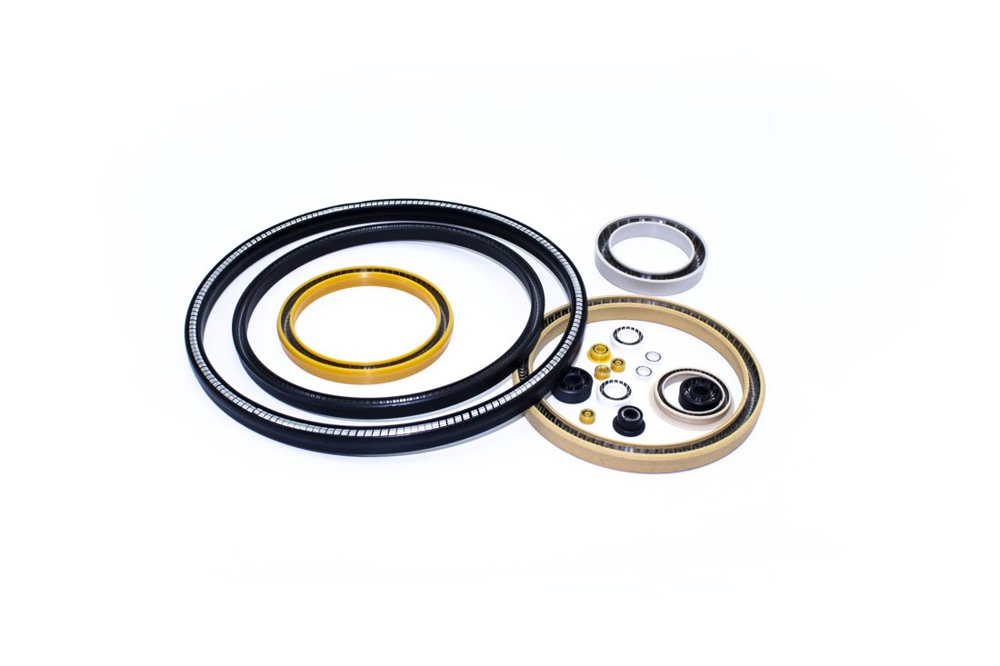
작동 원리 & 구조Principle & Structure
PTFE·UHMWPE·PEEK 등 저마찰·고내화학성 폴리머로 립(lip) 형태의 자켓을 정밀 가공하고, 그 내부에 스테인리스강·Elgiloy®·Hastelloy®·Inconel® 등 금속 스프링을 삽입한 구조입니다. 스프링이 립을 상대 표면 쪽으로 지속적으로 밀어주기 때문에, 폴리머 자체의 탄성만으로는 대응하기 어려운 극저온·극고온·고진공 조건에서도 밀봉 접촉이 끊기지 않습니다. 스프링은 하중 특성에 따라 캔틸레버·헬리컬 와운드·유니디렉셔널·더블 와운드·솔리드 콘택트·에칭 등 6가지 형태로 나뉘며, 저하중·저속의 동적 씰링에는 캔틸레버형을, 정적이거나 엄격한 씰링이 요구되는 조건에는 헬리컬 와운드·솔리드 콘택트형을 주로 적용합니다. 자켓 재질과 스프링 합금은 매체·압력·온도 조건에 맞춰 별도로 구성하며, 상세 선정 기준은 아래 설계·자켓재질·스프링타입 및 재질 탭에서 확인하실 수 있습니다.A lip-shaped jacket is precision-machined from a low-friction, chemically resistant polymer — PTFE, UHMWPE or PEEK — with a metal spring such as stainless steel, Elgiloy®, Hastelloy® or Inconel® fitted inside it. Because the spring continuously pushes the lip against the mating surface, sealing contact is maintained even under cryogenic cold, high heat or high vacuum — conditions where the polymer's own elasticity alone would not be enough. Springs come in six geometries with different load characteristics — cantilever, helical wound, unidirectional, double wrapped, solid contact and etched — with cantilever springs typically used for low-load, low-speed dynamic sealing and helical-wound or solid-contact springs for static or especially demanding sealing duty. Jacket material and spring alloy are each configured separately to match the media, pressure and temperature — see the Design, Jacket Material and Spring Types & Alloys tabs below for detailed selection guidance.
주요 특징Key Features
- 스프링 하중으로 극한 조건에서도 일정한 접촉압 유지Spring load keeps contact pressure constant even in extreme conditions
- PTFE 자켓의 낮은 마찰계수로 장시간 무급유 작동 가능The PTFE jacket's low friction allows extended dry-running operation
- 극저온(액체수소·질소·헬륨)부터 고온까지 대응Covers cryogenic media (liquid hydrogen, nitrogen, helium) through high temperatures
- 스프링 합금·자켓 재질을 유체·압력 조건에 맞춰 맞춤 선정Spring alloy and jacket material are matched to the specific fluid and pressure condition
- 축 이동·편심에도 유연하게 추종하는 동적 밀봉 성능Flexibly follows shaft movement and misalignment in dynamic service
적용 분야Applications
씰 작동 및 모션Seal Function and Motion
밀봉이 이루어지는 두 접촉면의 상대 운동 여부에 따라 씰링은 정적(static)과 동적(dynamic) 방식으로 나뉩니다. 정적 방식은 두 면 사이에 상대 운동이 거의 없는 경우로, 볼트로 체결되는 플랜지 이음이 대표적이며 이때는 축방향(면) 씰이 사용됩니다. 동적 방식은 두 면 중 하나가 상대적으로 움직이는 경우로, 샤프트와 보어로 구성된 유압 실린더가 대표적입니다. 동적 적용은 다시 왕복(직선) 운동과 회전(요동 포함) 운동으로 나뉘며, 이러한 조건에는 반경방향 씰(로드씰·피스톤씰)이 사용됩니다.Sealing applications fall into two basic types depending on whether the two contacting surfaces move relative to one another: static and dynamic. In static applications there is essentially no relative motion between the surfaces — a bolted flange joint is a typical example, and axial (face) seals are used here. In dynamic applications, at least one surface moves relative to the other, as in a hydraulic cylinder with a shaft and bore. Dynamic applications are further divided into reciprocating (linear) motion and rotary (including oscillating) motion, both of which call for radial seals such as rod seals and piston seals.
씰이 장착되는 홈(gland)의 위치와 하우징 형상에 따라 밀봉 방식은 반경방향(radial) 씰링과 축방향(axial, 면) 씰링으로 구분됩니다. 반경방향 씰링은 씰을 반경 방향으로 압축하는 홈 구조로, 샤프트에 가공되는 수(male) 홈과 보어에 가공되는 암(female) 홈이 있으며 대부분(항상은 아님) 동적 적용에 사용되어 로드씰·피스톤씰로 활용됩니다. 축방향 씰링은 씰의 축 방향으로 압축이 이루어지는 홈 구조로, 부품의 접합면에 가공되며 대부분(항상은 아님) 정적 적용에 사용되어 내측·외측 면씰로 활용됩니다.Depending on the location of the seal gland and the shape of the hardware, sealing can be classified as radial or axial (face) sealing. Radial sealing uses glands that compress the seal in the radial direction — male glands machined into the shaft and female glands machined into the bore — and is usually, though not always, used in dynamic applications as rod seals and piston seals. Axial sealing uses glands that compress the seal parallel to its axis, machined into the mating face of the hardware, and is usually, though not always, used in static applications as inside and outside face seals.
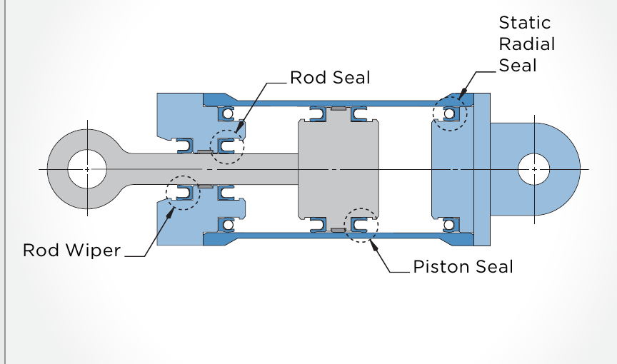
동적 반경방향 씰링Dynamic Radial Seal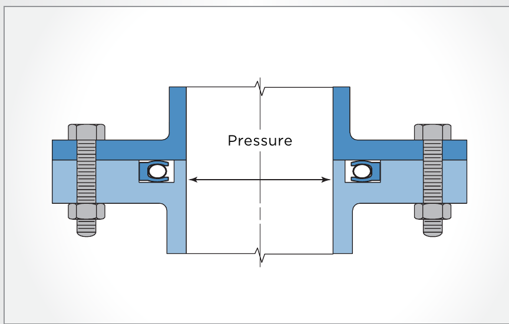
정적 내측 축방향 씰링Static Inside Face Seal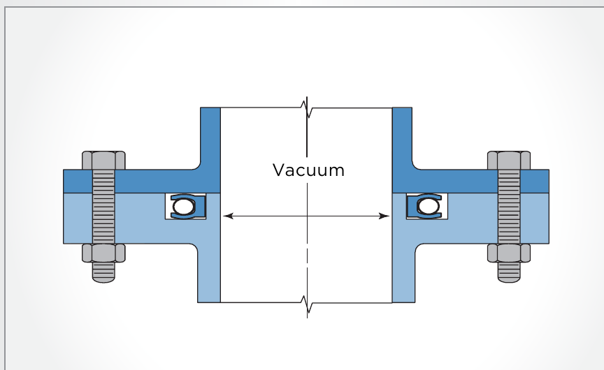
정적 외측 축방향 씰링Static Outside Face Seal설계Design
스프링에너자이드씰은 적용 형태(정적·동적)와 운동 방향(반경방향·축방향)에 따라 적합한 스프링 형태와 씰 구조가 달라집니다. 아래는 용도별 선정 가이드와, 마찰·압출 간극·표면 조도 등 설계 시 참고할 기준입니다.The best spring geometry and seal structure for a spring-energized seal depends on the application type (static or dynamic) and direction of motion (radial or axial). Below is a selection guide by application, along with friction, extrusion-gap and surface-finish reference data for design.
정적 페이스씰Static Face Seals
볼트 체결 커버·플랜지 등 상대 운동이 거의 없는 면씰 적용입니다. 헬리컬 와운드 스프링은 중~고하중을 형성해 넓은 압력·온도 범위에 대응하며, 고진공·초저온·화학 환경처럼 누설 허용치가 엄격한 경우에는 갭이 없는(gap-less) 스프링 구조로 높은 접촉하중을 내는 타입이 유리합니다. 하중이 낮고 하우징 변형이 큰 경우에는 캔틸레버형이 적합합니다.Face-seal applications with essentially no relative motion, such as bolted covers and flanges. Helical-wound springs generate moderate-to-high loads across a wide pressure and temperature range; for tight-leakage duty in high vacuum, cryogenic or aggressive-chemical service, a gap-less spring geometry with high, uniform contact load is preferred. Where loads must stay low or the housing is prone to distortion, a cantilever-spring design fits better.
동적 반경방향씰 — 왕복운동Dynamic Radial Seals — Reciprocating
로드·피스톤 씰링에 가장 널리 쓰이는 형태입니다. 캔틸레버 스프링은 저~중하중으로 마찰이 낮고 수명이 길며, U자형 스프링 형상은 에지 접촉과 스크레이핑 작용에 유리해 이물질 배출 성능이 좋습니다. 더 가혹한 조건(항공기 유압 등)에는 헬리컬 와운드형이 적합하고, 대형 씰 홈(약 3.2mm 이상)에는 처짐량이 크고 내마모성이 뛰어난 더블 와운드형을 사용합니다. 고압 조건에서는 백업링을 병행 적용합니다.The most common configuration for rod and piston seals. Cantilever springs give low-to-moderate load, low friction and long life; a U-shaped spring geometry provides edge contact with a scraping action that sheds contaminants well. Helical-wound springs suit more demanding duty such as aircraft hydraulics, while double-wrapped springs — with high deflection capacity and excellent wear resistance — are used in larger glands (roughly 3.2mm and up). Back-up rings are added for high-pressure service.
동적 반경방향씰 — 회전운동Dynamic Radial Seals — Rotary
회전·요동 운동에서는 마모가 진행되며 씰이 샤프트와 함께 회전하려는 경향이 생길 수 있어, 필요 시 씰 자켓을 홈에 고정하는 플랜지 구조를 적용합니다. 캔틸레버형은 에지 접촉으로 유체·이물질 제어와 저마찰 특성이 우수하며, 소단면(약 3.2mm 미만)의 유니디렉셔널 와이어 스프링형은 큰 변형 허용량으로 편심·진동에 강합니다. 저속·고압 조건에는 더블 와운드형이나 헬리컬 와운드형이 적합하며, 헬리컬 와운드형은 극저온 등 온도 변화가 큰 밸브·챔버 액추에이터 샤프트 씰링에 특히 우수합니다.In rotary or oscillating motion, wear can cause the seal to gradually rotate with the shaft; where this matters, a flanged jacket design locks the seal into the gland. Cantilever springs give edge contact for good fluid/debris control and low friction. Unidirectional wire springs, used mainly in small cross-sections (under about 3.2mm), offer high deflection capacity that tolerates runout and misalignment well. Double-wrapped or helical-wound springs suit slower, higher-pressure duty, and helical-wound springs are especially well suited to actuator shaft sealing in valves and chambers exposed to wide temperature swings such as cryogenic service.
극한 환경(초저온·고진공) 고려사항Extreme Environment Considerations
초저온(약 -60℉/-51℃ 이하) 환경에서는 폴리머 자켓의 열수축이 금속 하드웨어보다 훨씬 크게 나타나므로 일반 조건과 다른 설계 여유가 필요합니다. 면씰은 반경방향씰보다 저온 영향을 덜 받으며, 반경방향씰은 별도의 저온용 설계와 백업링 형상(간극 또는 경사 절단)이 필요할 수 있습니다. 극저온·고진공·특수 화학 환경의 씰 설계는 사전 문의를 권장합니다.Below roughly -60°F (-51°C), the polymer jacket's thermal shrinkage becomes much larger than that of the surrounding metal hardware, so cryogenic designs need different clearances than standard conditions. Face seals are less affected by cold than radial seals; radial seals in cryogenic service often need a dedicated low-temperature design, sometimes including a gapped or angle-cut back-up ring. For cryogenic, high-vacuum or specialty-chemical service, we recommend consulting us during the design stage.
마찰력 산정Estimating Friction
마찰력은 씰 접촉면과 상대 하드웨어(평면·구면·샤프트) 사이에서 발생하는 저항으로, 표면 조도·온도·매체·압력의 영향을 받습니다. 신품 씰은 접촉폭이 좁아 초기 마찰이 다소 높으며, 짧은 초기 마모(러닝인) 기간 후 안정됩니다. 매체 압력이 커질수록 스프링 하중에 압력 하중이 더해져 마찰과 구동 저항이 함께 증가합니다. 대략적인 회전 토크와 직선 마찰력은 아래 식으로 근사할 수 있습니다.Friction is the resistance generated between the seal's contact face and the mating hardware — a flat surface, a sphere, or a shaft — and is influenced by surface finish, temperature, media and pressure. A new seal has a narrower contact width and slightly higher initial friction, which settles down after a short break-in period. As media pressure rises, it adds to the spring load and increases friction and drag together. Rotating torque and linear friction can be roughly approximated with the formulas below.
압출 간극(Extrusion Gap) 기준Seal Extrusion Gap Guidelines
고압·고온 조건에서는 씰 배후(하류측)의 압출 간극 — 하우징과 샤프트/보어 사이의 틈새 — 이 씰 수명을 크게 좌우합니다. 간극이 과도하면 씰 소재가 틈새로 밀려나가 조기 파손으로 이어지므로 간극은 항상 최소로 유지하고, 힐(heel) 두께를 늘리거나 별도 백업링을 적용해 내압출성을 높입니다. 백업링은 씰보다 경도가 높은 소재를 사용하며, 대표적으로 PEEK(무충전/유리섬유/그라파이트-PTFE 충전)와 PTFE(고카본/고유리섬유/브론즈 충전) 계열이 있습니다. 아래는 압력 구간별 허용 압출 간극(직경 기준)의 대략적인 기준입니다.At high pressures and temperatures, the extrusion gap behind the seal — the clearance between the housing and the shaft or bore — becomes critical to service life. Excessive clearance lets the seal material extrude into the gap and fail prematurely, so the gap should always be kept to a minimum; increasing the seal's heel thickness or adding a separate back-up ring improves extrusion resistance. Back-up rings use a material harder than the seal itself — typically PEEK (unfilled, glass-fiber or graphite/PTFE filled) or PTFE (high-carbon, high-glass-fiber or bronze filled). The table below gives approximate allowable extrusion gaps (diametral) by pressure range.
| 씰 구성Configuration | ~2,000 psi (~138 bar)~2,000 psi (~138 bar) | ~4,000 psi (~276 bar)~4,000 psi (~276 bar) | ~6,000 psi (~414 bar)~6,000 psi (~414 bar) | ~15,000 psi (~1,034 bar)~15,000 psi (~1,034 bar) |
|---|---|---|---|---|
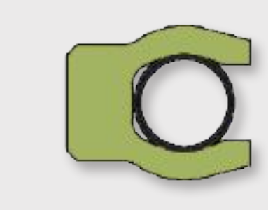 표준 씰Standard Seal | 0.004″ (0.10mm) | 0.003″ (0.08mm) | 0.002″ (0.05mm) | 0.0015″ (0.04mm) |
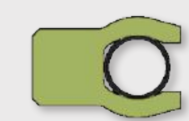 확장 힐 씰Extended Heel | 0.007″ (0.18mm) | 0.005″ (0.13mm) | 0.003″ (0.08mm) | 0.002″ (0.05mm) |
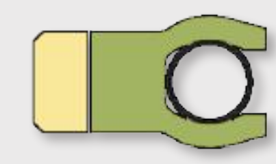 싱글 백업링 적용Single Back-up Ring | 0.009″ (0.23mm) | 0.007″ (0.18mm) | 0.005″ (0.13mm) | 0.0025″ (0.06mm) |
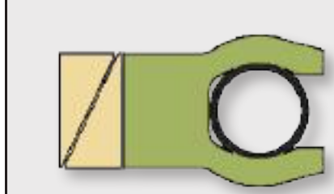 확장/캠드 백업링 적용Extended / Cammed Back-up | 0.012″ (0.30mm) | 0.009″ (0.23mm) | 0.007″ (0.18mm) | 0.003″ (0.08mm) |
표면 조도(Surface Finish) 기준Surface Finish Guidelines
씰 홈(gland)도 밀봉 시스템의 절반을 차지하므로, 표면 조도·경도·다공성이 누설률과 마모 수명에 직접 영향을 줍니다. 동적 씰링 면은 로크웰 C43 이상의 경도를 권장하며, 경도가 높을수록 정밀 다듬질이 오래 유지되어 씰 성능과 수명이 향상됩니다. 무급유 동적 조건에서는 8~12 RMS 마이크로인치 조도에서 수명이 가장 길게 나타나는 경향이 있고(마모 입자가 미세 표면 구조에 자리잡아 윤활 역할), 습윤(윤활) 조건에서는 더 정밀한 조도가 유리합니다. 면씰은 하드웨어 중심선과 동심을 이루는 원형 가공 흔적(circular lay)이 되도록 합니다. 아래는 매체·용도별 권장 표면 조도 기준입니다.The seal gland is effectively half of the sealing system, so surface finish, hardness and porosity directly affect leak rate and wear life. Dynamic sealing surfaces should be Rockwell C43 or harder — a harder surface holds its fine finish longer, which improves both sealing performance and service life. Dry dynamic applications tend to last longest around 8–12 RMS micro-inch (worn material settles into the micro-surface structure and adds lubrication at the contact interface), while wetted/lubricated applications benefit from a finer finish. Face-seal finishes should have a circular lay, concentric with the hardware centerline. The table below gives recommended surface-finish ranges by media and application.
| 매체군Media Group | 동적 적용 (RMS ㎲in)Dynamic Applications (RMS µin) | 정적 적용 (RMS ㎲in)Static Applications (RMS µin) |
|---|---|---|
| 극저온·고진공·헬륨·수소Cryogenics, deep vacuum, helium, hydrogen | 2 ~ 6 | 4 ~ 8 |
| 공기·메탄올·에탄올·아르곤·질소가스·암모니아·독성가스·액화메탄Air, methanol/ethanol, argon, nitrogen gas, ammonia, toxic gases, liquid methane | 4 ~ 12 | 8 ~ 16 |
| 원유·물·경질 석유연료·유압유·가스상 메탄·이산화탄소Crude oil, water, light petroleum fuels, hydraulic fluids, gaseous methane, carbon dioxide | 8 ~ 16 | 8 ~ 32 |
자켓재질Jacket Material
씰의 자켓(밀봉 접촉부)은 매체·온도·상대속도·상대재 경도에 맞춰 PTFE·UHMWPE·PEEK 계열의 다양한 충전 컴파운드 중에서 선정합니다. 아래는 대표적인 자켓 소재 그레이드와 특징입니다.The seal jacket (the part that contacts the mating surface) is selected from a range of filled PTFE, UHMWPE and PEEK compounds to match the media, temperature, relative speed and mating-surface hardness. Representative jacket material grades and characteristics are listed below.
| 코드Code | 소재Material | 설명Description | 사용 온도Temp. Range |
|---|---|---|---|
| 01 | 순수 PTFEVirgin PTFE | 정적 씰링·화학약품·심냉 극저온(LOX, LH2, LHe, N2O4, H2O2, UDMH, LCH4) 등 화학공정 전반에 사용. FDA 적합, 가스투과율 낮음, 고진공 씰링에 적합.Static seals, chemicals, deep cryogenics (LOX, LH2, LHe, N2O4, H2O2, UDMH, LCH4) and general chemical-plant use. FDA compliant, low gas permeability, suited to hard-vacuum sealing. | -268 ~ 288℃ (-450~550°F) |
| 01S | 개질 PTFE (TFM)Virgin TFM Modified PTFE | 일반 PTFE보다 단단하고 가스투과율이 낮음. 기체 또는 극저온의 저분자량 화학물질에 적합. FDA 적합, PTFE와 유사한 내약품성에 마모는 더 느림.Harder than standard PTFE with lower gas permeability. Suited to gaseous or cryogenic low-molecular-weight chemicals. FDA compliant, near-PTFE chemical inertness with slower wear. | -268 ~ 288℃ (-450~550°F) |
| 02 | 카본·PPS 충전 PTFECarbon/PPS Filled PTFE | 저온·고온 모두에서 저마모 동적 용도에 우수. 경질유·수용액·건식 사용 가능. 연질 금속 상대재에는 마모를 유발할 수 있음.Excellent low-wear performance in dynamic service, hot or cold. Usable in light oils, aqueous solutions or dry. Can be abrasive against soft-metal mating surfaces. | -268 ~ 260℃ (-450~500°F) |
| 03 | 폴리이미드 충전 PTFEPolyimide Filled PTFE | 고속·고압 유압 용도에 최적. 건식·윤활 모두 마모 우수, 연질~경질 금속 상대재에 사용. 내열성 우수, 고온 건식·윤활 용도에 적합.Best suited to high-speed, high-pressure hydraulic service. Wears well dry or lubricated, against soft-to-hard metal. Heat resistant, good for hot dry or lubricated duty. | -129 ~ 316℃ (-200~600°F) |
| 04 | 에코놀 충전 PTFEEkonol Filled PTFE | 고온 PTFE 블렌드로 고온 합성유에 강함. 연질금속을 손상시키지 않으며 건식·오일 모두 고속 사용 가능. 터빈엔진·베어링 커버·고온 가스 액추에이터 등에 사용.A high-temperature PTFE blend that holds up well in hot synthetic oils. Runs at high speed dry or on oil without damaging soft metals. Used in turbine engines, bearing covers and hot-gas actuators. | -212 ~ 316℃ (-350~600°F) |
| 05 | 그라파이트 충전 PTFEGraphite Filled PTFE | 건식·수계·스팀 용도에 우수. 건식 또는 오일/그리스 윤활 조건 모두 사용 가능.Excellent for dry, water and steam service. Usable dry or with oil/grease lubrication. | -268 ~ 316℃ (-450~600°F) |
| 06 | 브론즈 충전 PTFEBronze Filled PTFE | 저~중속 유압 용도에 주로 사용. 액추에이터 샤프트의 웨어밴드·씰링에 적합, 윤활 시 중경도 강 실린더 보어에 무리 없음.Used mainly in low-to-medium-speed hydraulic service. Suited to actuator-shaft wear bands and seal rings; gentle on medium-hardness steel cylinder bores when lubricated. | -46 ~ 288℃ (-50~550°F) |
| 07 | 미네랄(FDA) 충전 PTFEMineral FDA Filled PTFE | 소모품(식품 등) 고온·저온 겸용 FDA 적합 소재. 백색이며 대부분 매체에 불활성. 중속 씰·립씰·슬링거 용도.FDA-compliant material for hot or cold consumable-contact use. White in color and inert to most media. Used for moderate-speed seals, lip seals and slingers. | -268 ~ 316℃ (-450~600°F) |
| 08 | 유리섬유·MoS₂ 충전 PTFEGlass/MoS₂ (Moly) Filled PTFE | 고속 씰·립씰·링·베어링·오일 용도에 우수. 고온·저온 모두 사용 가능하며 내마모성이 매우 뛰어남. 중경도 이상(로크웰 C42+) 금속과 함께, 가급적 윤활 상태로 사용 권장.Excellent for high-speed seals, lip seals, rings, bearings and oil service. Usable hot or cold with very high wear resistance. Best used against medium-hard-or-harder metal (Rockwell C42+), preferably lubricated. | -268 ~ 316℃ (-450~600°F) |
| 09 | 브론즈·MoS₂ 충전 PTFEBronze/MoS₂ (Moly) Filled PTFE | 06번의 몰리 윤활 버전으로 건식·습식 모두 내마모성 향상. 유압용 씰·웨어밴드·백업링에 우수, 06번보다 마찰이 낮고 강재 상대재·넓은 온도범위에 적합.A moly-lubricated version of grade 06 with improved wear resistance dry or wet. Excellent for hydraulic seals, wear bands and back-up rings — lower friction than 06, suited to steel mating surfaces over a wider temperature range. | -184 ~ 316℃ (-300~600°F) |
| 10 | 순수 UHMWPEVirgin UHMWPE | 수계·유압 용도의 내마모 소재로 질기고 충격에 강함. 연질 상대면을 손상시키지 않음. FDA 적합.A tough, impact-resistant wear material for water and hydraulic service. Does not damage soft mating surfaces. FDA compliant. | -268 ~ 82℃ (-450~180°F) |
| 10H | 고온형 UHMWPEUHMWPE High Temp | 10번의 고온 버전. 연질 상대면에도 사용 가능하며 충격·내마모성 우수. FDA 적합.A higher-temperature version of grade 10. Usable against soft mating surfaces with good impact and wear resistance. FDA compliant. | -196 ~ 93℃ (-320~200°F) |
| 11 | 순수 PEEK/PEKVirgin PEEK/PEK | 내열·내마모성이 뛰어나고 강도가 높은 소재. 백업링, 정밀 씰, 구조 부품에 적합. 핫멜트 접착, 밸브 시트 등 고온 용도에 사용.A strong, heat- and wear-resistant material suited to back-up rings, precision seals and structural parts. Used in hot-melt adhesive equipment, valve seats and other high-temperature duty. | -129 ~ 288℃ (-200~550°F) |
| 12 | 유리섬유 충전 PEEK/PEKGlass Filled PEEK/PEK | 백업링·랜턴링용 강화 소재. 고온 구조 부품용 엔지니어링 복합재. 연질금속에는 마모를 유발할 수 있어(윤활 시 로크웰 C47+, 건식 로크웰 C55+ 권장) 상대재 경도에 유의합니다.A reinforced material for back-up and lantern rings — an engineering composite for hot structural parts. Can be abrasive against soft metal, so a Rockwell C47+ (lubricated) or C55+ (dry) mating surface is recommended. | -73 ~ 288℃ (-100~550°F) |
| 13 | 카본파이버 충전 PEEK/PEKCarbon Fiber PEEK/PEK | 백업링·랜턴링용 프리미엄 강화 소재("블랙 스틸"로도 불림). 고난도 고온 구조 부품에 사용. 연질금속에는 마모를 유발할 수 있어(윤활 시 로크웰 C47+, 건식 로크웰 C55+ 권장) 상대재 경도에 유의합니다.A premium reinforced material for back-up and lantern rings, sometimes called "black steel." Used for demanding hot structural parts. Can be abrasive against soft metal, so a Rockwell C47+ (lubricated) or C55+ (dry) mating surface is recommended. | -101 ~ 288℃ (-150~550°F) |
스프링타입 및 재질Spring Types & Alloys
스프링 자체의 하중 특성은 형태(타입)에 따라 달라지며, 합금은 매체의 화학적 환경(부식성)에 맞춰 선정합니다. 아래는 하중 특성별 스프링 6종과, 대표 금속 합금의 스프링 형태별 적용 가능 여부·특성입니다.A spring's load characteristics depend on its geometry (type), while the alloy is selected to suit the chemical environment (corrosivity) of the media. Below are six spring types by load characteristic, along with which spring geometries each representative alloy supports and its general characteristics.
스프링 타입 (하중 특성별 6종)Spring Types by Load Characteristic
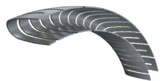
캔틸레버 스프링Cantilever Spring낮으면서 선형적으로 증가하는 하중 곡선. 매우 동적인 조건에 사용되며 씰·하드웨어 수명을 극대화하는 가장 널리 쓰이는 형태입니다.A low, linearly increasing load curve. Used in highly dynamic conditions and the most widely used geometry for maximizing seal and hardware life.
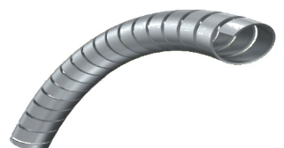
헬리컬 와운드 스프링Helical Wound Spring길이 변형 당 부하가 상당히 높습니다. 주로 정적이거나 저속 운동 조건, 가벼운 가스 등 엄격한 씰링이 요구되는 조건에 적합합니다.Load per unit deflection is considerably higher. Best suited to static or low-speed motion and demanding sealing duty such as light gases.
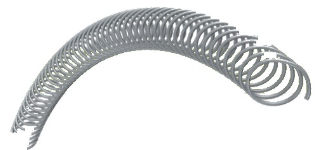
유니디렉셔널 스프링Uni-directional Spring변형이 증가해도 거의 일정한 하중을 제공해 마모 허용량이 크며, 넓은 변형 범위에서 거의 일정한 마찰을 유지합니다.Provides a nearly constant load as deflection increases, giving a large wear allowance and keeping friction nearly constant over a wide deflection range.
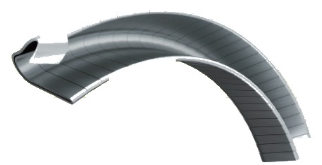
더블 와운드(리본) 스프링Double Wrapped (Ribbon) Spring리본 스프링을 감아 형성한 가장 견고한 씰 구조 중 하나로, 왕복·정지·회전 운동 조건에 모두 사용할 수 있습니다.One of the most robust seal structures, wound from ribbon spring stock. Can be used in reciprocating, static and rotary applications alike.
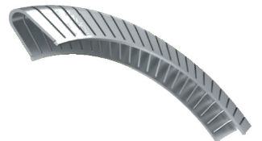
솔리드 콘택트 스프링Solid Contact Spring초저온 적용 분야용으로 높은 하중을 제공하며, 스프링 형상이 수축되지 않아 극한 온도 변화와 고진공 유지에 이상적입니다.Delivers high load for cryogenic applications; the spring geometry does not collapse, making it ideal for extreme temperature swings and holding high vacuum.
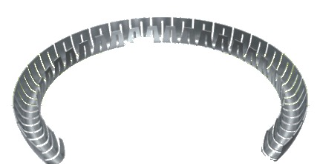
에칭 스프링Etched Spring화학적으로 에칭한 소형 스프링으로 내경 0.5mm까지 초소형 제작이 가능해, 고압 조건 및 소형 단면 운동 조건에 추천됩니다.A small, chemically etched spring that can be produced down to a 0.5mm bore — recommended for high-pressure duty and small-cross-section dynamic seals.
합금별 적용 가능 스프링 타입Spring Types Supported by Alloy
| 스프링 합금Spring Alloy | 에칭 캔틸레버Etched Cantilever | 캔틸레버Cantilever | 헬리컬 와운드Helical Wound | 유니디렉셔널Uni-directional | 더블 와운드Double Wrapped | 솔리드 콘택트Solid Contact | 립씰 가터Lip Seal Garter |
|---|---|---|---|---|---|---|---|
| 17-7 PH 스테인리스강 (7S)17-7 PH Stainless Steel (7S) | ● | ||||||
| 301 스테인리스강 (1S)301 Stainless Steel (1S) | ● | ● | ● | ● | |||
| 302 스테인리스강 (2S)302 Stainless Steel (2S) | ● | ● | |||||
| 304 스테인리스강 (4S)304 Stainless Steel (4S) | ● | ● | ● | ● | ● | ||
| 316 스테인리스강 (6S)316 Stainless Steel (6S) | ● | ● | ● | ● | ● | ● | |
| Elgiloy® (EL)Elgiloy® (EL) | ● | ● | ● | ● | |||
| Hastelloy® (HA)Hastelloy® (HA) | ● | ● | ● | ● | ● | ● | |
| Inconel® (IN)Inconel® (IN) | ● | ● | ● | ● | ● | ● | |
| Titanium (TI)Titanium (TI) | ● | ● | ● | ● | ● |
씰 형태·단면 크기에 따라 실제 적용 가능 여부가 달라질 수 있습니다. 구체적인 조합은 문의 바랍니다.Actual applicability can vary with seal geometry and cross-section size — please contact us for specific combinations.
합금별 특성Alloy Characteristics
| 합금Alloy | 특성Characteristics |
|---|---|
| 301 스테인리스강301 Stainless Steel | 일반 용도에 적합하나 극도로 부식성이 강한 물질에는 권장하지 않습니다.Suitable for general use; not recommended for extremely corrosive substances. |
| 304 스테인리스강304 Stainless Steel | 대부분의 환경에서 내식성이 우수하며, 습기·경미한 화학물질이 있는 일반 용도에 적합합니다.Resists corrosion in most environments — general application with moisture and mild chemicals. |
| 316 스테인리스강316 Stainless Steel | 일반 용도에 사용하며, 저온에서 내식성이 한층 향상됩니다.General applications, with enhanced corrosion resistance at lower temperatures. |
| 17-7 스테인리스강17-7 Stainless Steel | 고온에서도 기계적 물성을 잘 유지합니다.Enhanced retention of mechanical properties under elevated temperatures. |
| Inconel 625®Inconel 625® | 석유화학 분야에서 널리 사용되며 내식성이 우수합니다.Widely used in petrochemical applications, with excellent corrosion resistance. |
| Elgiloy®Elgiloy® | 원유·사우어가스 환경에서 널리 사용되는 내식성이 뛰어난 합금입니다.Widely used in crude oil and sour-gas environments — an excellent corrosion-resistant alloy. |
| Hastelloy®Hastelloy® | 고온 무기산, 용제, 염소 오염 산에 대한 내식성이 우수합니다.Excellent resistance to hot mineral acids, solvents and chlorine-contaminated acids. |
| TitaniumTitanium | 경량이면서 내식성이 우수해 경량화·특수 저온 조건에 사용됩니다.Lightweight with good corrosion resistance — used for weight-sensitive and special low-temperature conditions. |
원하는 제품 사양이 있으신가요?Need a specific specification?
치수·도면·수량을 알려주시면 담당자가 신속히 답변드립니다.Send us your dimensions, drawings and quantity for a prompt reply.